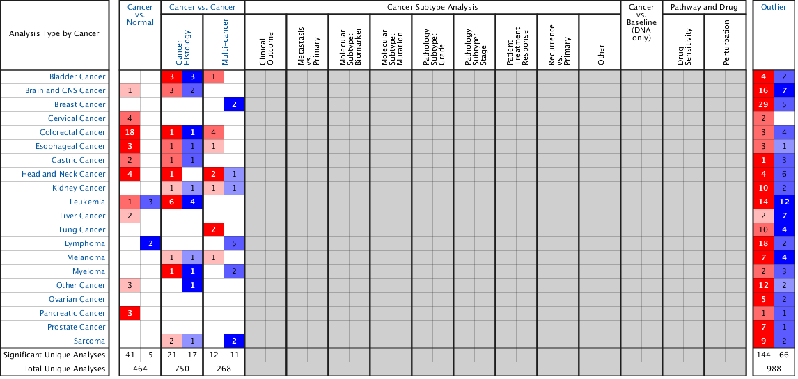
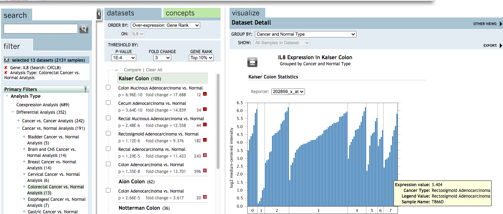
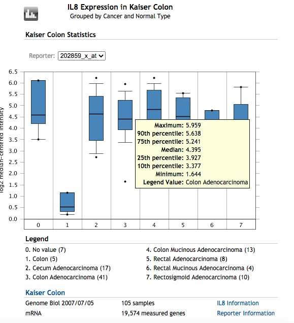

oncomine是一个很好的肿瘤数据库，功能很强大，也有可视化的操作，但是最大的问题是数据不能很好的获得，，而且自带的图很丑（而且只是png），关于oncomine的教程有很多，比较经典有解螺旋的教程，比如下面这个，基本涵盖了常用的功能：
然而，大神yikeshu0611默默的为我们付出，之前开发了一个R包叫ROncomine可以很方便的获得数据，并且再次出图，不过最近又更新为oncomineR了，新版的我还没研究，这里我们还是先说老版的ROncomine
这个包以前托管在Github上（由于众所皆知的原因，国内访问Github很困难），但是目前已经删除了，好在我之前已经导入到了我的码云上了，所以也可以很快的安装。
以前其实还有一个教程破解oncomine无法免费下载数据，学员开发了一款R语言包，但是目前也被删除了，估计这个还是有版权的，所以我还是悄悄的写个自己看的教程
首先需要安装devtools，然后调用install_git函数就可以直接安装,之后就方便了
install.packages(‘devtools’)
devtools::install_git(’https://gitee.com/swcyo/oncomineR’))
其实每一个oncomine的数据都可以使用浏览器获得，用chrome浏览器登录，随便一个地方鼠标右击找到检查元素，就可以看到代码区，使用Crtl+F查找<map，我们需要的代码全都在<map那一片，右击复制然后新建一个文本文档保存起来
oncomineR的原理只是是把检查元素里<map那串代码二次处理，从而简化工作，然后调用ploty作图，当然你也可以用ggplot2再次画图
按照解螺旋的教程，比如搜索CXCL8基因，实际上基因名为IL8，然后我们可以在右边看到这样的一个热图：

我们复制<map那一串代码，保存为heatmap.txt文件，我们可以用Oncomine_heatmap_DiseaseSummaryfor_SomeGene处理
library(ROncomine)
heat<-Oncomine_heatmap_DiseaseSummaryfor_SomeGene('/Users/mac/Documents/GitHub/myblog/content/post/2021-08-19-oncomine/heatmap.txt') # 命名为heat
knitr::kable(heat) ## 这步是我的教程示例代码，不需要执行| Cancer Type | Analysis Type | meat threshold | meat intotal | expression | |
|---|---|---|---|---|---|
| X1 | Bladder Cancer | Cancer Histology | 3 | 18 | over |
| X2 | Bladder Cancer | Cancer Histology | 3 | 18 | under |
| X3 | Bladder Cancer | Multi-cancer | 1 | 9 | over |
| X4 | Bladder Cancer | Outlier | 4 | 12 | over |
| X5 | Bladder Cancer | Outlier | 2 | 12 | under |
| X6 | Brain and CNS Cancer | Cancer vs. Normal | 1 | 36 | over |
| X7 | Brain and CNS Cancer | Cancer Histology | 3 | 66 | over |
| X8 | Brain and CNS Cancer | Cancer Histology | 2 | 66 | under |
| X9 | Brain and CNS Cancer | Outlier | 16 | 37 | over |
| X10 | Brain and CNS Cancer | Outlier | 7 | 37 | under |
| X11 | Breast Cancer | Multi-cancer | 2 | 23 | under |
| X12 | Breast Cancer | Outlier | 29 | 68 | over |
| X13 | Breast Cancer | Outlier | 5 | 68 | under |
| X14 | Cervical Cancer | Cancer vs. Normal | 4 | 10 | over |
| X15 | Cervical Cancer | Outlier | 2 | 8 | over |
| X16 | Colorectal Cancer | Cancer vs. Normal | 18 | 35 | over |
| X17 | Colorectal Cancer | Cancer Histology | 1 | 32 | over |
| X18 | Colorectal Cancer | Cancer Histology | 1 | 32 | under |
| X19 | Colorectal Cancer | Multi-cancer | 4 | 24 | over |
| X20 | Colorectal Cancer | Outlier | 3 | 35 | over |
| X21 | Colorectal Cancer | Outlier | 4 | 35 | under |
| X22 | Esophageal Cancer | Cancer vs. Normal | 3 | 11 | over |
| X23 | Esophageal Cancer | Cancer Histology | 1 | 8 | over |
| X24 | Esophageal Cancer | Cancer Histology | 1 | 8 | under |
| X25 | Esophageal Cancer | Multi-cancer | 1 | 8 | over |
| X26 | Esophageal Cancer | Outlier | 3 | 12 | over |
| X27 | Esophageal Cancer | Outlier | 1 | 12 | under |
| X28 | Gastric Cancer | Cancer vs. Normal | 2 | 23 | over |
| X29 | Gastric Cancer | Cancer Histology | 1 | 29 | over |
| X30 | Gastric Cancer | Cancer Histology | 1 | 29 | under |
| X31 | Gastric Cancer | Outlier | 1 | 15 | over |
| X32 | Gastric Cancer | Outlier | 3 | 15 | under |
| X33 | Head and Neck Cancer | Cancer vs. Normal | 4 | 32 | over |
| X34 | Head and Neck Cancer | Cancer Histology | 1 | 14 | over |
| X35 | Head and Neck Cancer | Multi-cancer | 2 | 10 | over |
| X36 | Head and Neck Cancer | Multi-cancer | 1 | 10 | under |
| X37 | Head and Neck Cancer | Outlier | 4 | 22 | over |
| X38 | Head and Neck Cancer | Outlier | 6 | 22 | under |
| X39 | Kidney Cancer | Cancer Histology | 1 | 44 | over |
| X40 | Kidney Cancer | Cancer Histology | 1 | 44 | under |
| X41 | Kidney Cancer | Multi-cancer | 1 | 18 | over |
| X42 | Kidney Cancer | Multi-cancer | 1 | 18 | under |
| X43 | Kidney Cancer | Outlier | 10 | 18 | over |
| X44 | Kidney Cancer | Outlier | 2 | 18 | under |
| X45 | Leukemia | Cancer vs. Normal | 1 | 39 | over |
| X46 | Leukemia | Cancer vs. Normal | 3 | 39 | under |
| X47 | Leukemia | Cancer Histology | 6 | 117 | over |
| X48 | Leukemia | Cancer Histology | 4 | 117 | under |
| X49 | Leukemia | Outlier | 14 | 56 | over |
| X50 | Leukemia | Outlier | 12 | 56 | under |
| X51 | Liver Cancer | Cancer vs. Normal | 2 | 13 | over |
| X52 | Liver Cancer | Outlier | 2 | 15 | over |
| X53 | Liver Cancer | Outlier | 7 | 15 | under |
| X54 | Lung Cancer | Multi-cancer | 2 | 22 | over |
| X55 | Lung Cancer | Outlier | 10 | 36 | over |
| X56 | Lung Cancer | Outlier | 4 | 36 | under |
| X57 | Lymphoma | Cancer vs. Normal | 2 | 36 | under |
| X58 | Lymphoma | Multi-cancer | 5 | 17 | under |
| X59 | Lymphoma | Outlier | 18 | 34 | over |
| X60 | Lymphoma | Outlier | 2 | 34 | under |
| X61 | Melanoma | Cancer Histology | 1 | 4 | over |
| X62 | Melanoma | Cancer Histology | 1 | 4 | under |
| X63 | Melanoma | Multi-cancer | 1 | 18 | over |
| X64 | Melanoma | Outlier | 7 | 22 | over |
| X65 | Melanoma | Outlier | 4 | 22 | under |
| X66 | Myeloma | Cancer Histology | 1 | 13 | over |
| X67 | Myeloma | Cancer Histology | 1 | 13 | under |
| X68 | Myeloma | Multi-cancer | 2 | 6 | under |
| X69 | Myeloma | Outlier | 2 | 16 | over |
| X70 | Myeloma | Outlier | 3 | 16 | under |
| X71 | Other Cancer | Cancer vs. Normal | 3 | 32 | over |
| X72 | Other Cancer | Cancer Histology | 1 | 32 | under |
| X73 | Other Cancer | Outlier | 12 | 36 | over |
| X74 | Other Cancer | Outlier | 2 | 36 | under |
| X75 | Ovarian Cancer | Outlier | 5 | 19 | over |
| X76 | Ovarian Cancer | Outlier | 2 | 19 | under |
| X77 | Pancreatic Cancer | Cancer vs. Normal | 3 | 12 | over |
| X78 | Pancreatic Cancer | Outlier | 1 | 14 | over |
| X79 | Pancreatic Cancer | Outlier | 1 | 14 | under |
| X80 | Prostate Cancer | Outlier | 7 | 30 | over |
| X81 | Prostate Cancer | Outlier | 1 | 30 | under |
| X82 | Sarcoma | Cancer Histology | 2 | 101 | over |
| X83 | Sarcoma | Cancer Histology | 1 | 101 | under |
| X84 | Sarcoma | Multi-cancer | 2 | 13 | under |
| X85 | Sarcoma | Outlier | 9 | 25 | over |
| X86 | Sarcoma | Outlier | 2 | 25 | under |
这样我们很快的就提取了所有需要的数据，比如我们只想提取Cancer vs. Normal，那么可以用R语言处理，也可以用DataEditR交互式处理，或者导出来用excel处理
# cn<-heat[heat$`Analysis Type` == 'Cancer vs. Normal',]
# DataEditR::data_edit(heat) # 也可以用交互式编辑
cn<-read.csv('/Users/mac/Documents/GitHub/myblog/content/post/2021-08-19-oncomine/cn.csv')
knitr::kable(cn)| X | Cancer.Type | Analysis.Type. | meat.threshold | meat.intotal | expression |
|---|---|---|---|---|---|
| X6 | Brain and CNS Cancer | Cancer vs. Normal | 1 | 36 | over |
| X14 | Cervical Cancer | Cancer vs. Normal | 4 | 10 | over |
| X16 | Colorectal Cancer | Cancer vs. Normal | 18 | 35 | over |
| X22 | Esophageal Cancer | Cancer vs. Normal | 3 | 11 | over |
| X28 | Gastric Cancer | Cancer vs. Normal | 2 | 23 | over |
| X33 | Head and Neck Cancer | Cancer vs. Normal | 4 | 32 | over |
| X45 | Leukemia | Cancer vs. Normal | 1 | 39 | over |
| X46 | Leukemia | Cancer vs. Normal | 3 | 39 | under |
| X51 | Liver Cancer | Cancer vs. Normal | 2 | 13 | over |
| X57 | Lymphoma | Cancer vs. Normal | 2 | 36 | under |
| X71 | Other Cancer | Cancer vs. Normal | 3 | 32 | over |
| X77 | Pancreatic Cancer | Cancer vs. Normal | 3 | 12 | over |
继续使用解螺旋的示例，用Oncomine分别查询CXCL8在肠癌组织（与正常比）中高表达的数据集和低表达的数据集。筛选条件：P-value：1E-4；Fold Change：3；GENE Rank：Top10%。
这里要注意，默认选择的是子数据，比如Kalser Colon，光标是在Colon Mucinous Adenocarcinoma vs. Normal，这样只是比较肿瘤亚型与正常，这个时候在Differential Analysis的GROUP BY是灰白的，如果我们要看所有，就要点击Kalser Colon，然后GROUP BY就可以选择下拉框了，我们选择Cancer and Normal Type，我们可以看到在GROUP里有很多很多的分组，其实就是很多很多的数据，我们想要的都可以提取了
默认的是一个barplot，出现的是直方图，鼠标在柱子上停留就可以看到value，也就是我们需要的

可以看到有一个箱式图的图标，点一下就变成了Boxplot，鼠标房子Box上可以看到参数

同样的办法，复制<map代码区并保存为文本文件，比如命名为box.txt,这里其实box和bar的界面结果是一样的，我们在bar里复制，然后使用Oncomine_bar函数
box<-Oncomine_bar('/Users/mac/Documents/GitHub/myblog/content/post/2021-08-19-oncomine/box.txt')
knitr::kable(box)| Expression value | Cancer Type | Sample Name | Normal Tissue Type | Legend Value |
|---|---|---|---|---|
| 3.509 | Colon Small Cell Carcinoma | T4360A3 | No value | No value |
| 4.205 | Colon Signet Ring Cell Adenocarcinoma | T5245A1 | No value | No value |
| 4.407 | Rectosigmoid Mucinous Adenocarcinoma | T940A | No value | No value |
| 4.575 | Colon Small Cell Carcinoma | T4360A2 | No value | No value |
| 5.109 | Rectal Signet Ring Cell Adenocarcinoma | T924C | No value | No value |
| 5.867 | Colon Signet Ring Cell Adenocarcinoma | T5002A1 | No value | No value |
| 6.110 | Rectosigmoid Mucinous Adenocarcinoma | T4980A1 | No value | No value |
| 0.188 | Cancer | N552G | Colon | Colon |
| 0.315 | Cancer | N1369A | Colon | Colon |
| 0.533 | Cancer | N773A1 | Colon | Colon |
| 1.020 | Cancer | N1102A | Colon | Colon |
| 1.160 | Cancer | N2367A | Colon | Colon |
| 2.732 | Cancer | T4452A1 | Cecum Adenocarcinoma | Cecum Adenocarcinoma |
| 2.889 | Cancer | T4550B | Cecum Adenocarcinoma | Cecum Adenocarcinoma |
| 2.944 | Cancer | T902A | Cecum Adenocarcinoma | Cecum Adenocarcinoma |
| 3.397 | Cancer | T4834A1 | Cecum Adenocarcinoma | Cecum Adenocarcinoma |
| 3.453 | Cancer | T4354H | Cecum Adenocarcinoma | Cecum Adenocarcinoma |
| 4.437 | Cancer | T4544A1 | Cecum Adenocarcinoma | Cecum Adenocarcinoma |
| 4.492 | Cancer | T4926A1 | Cecum Adenocarcinoma | Cecum Adenocarcinoma |
| 4.597 | Cancer | T5376A1 | Cecum Adenocarcinoma | Cecum Adenocarcinoma |
| 4.623 | Cancer | T4452A2 | Cecum Adenocarcinoma | Cecum Adenocarcinoma |
| 4.724 | Cancer | T4452A | Cecum Adenocarcinoma | Cecum Adenocarcinoma |
| 4.801 | Cancer | T4452A3 | Cecum Adenocarcinoma | Cecum Adenocarcinoma |
| 5.183 | Cancer | T5133A | Cecum Adenocarcinoma | Cecum Adenocarcinoma |
| 5.315 | Cancer | T4452A4 | Cecum Adenocarcinoma | Cecum Adenocarcinoma |
| 5.407 | Cancer | T5024A1 | Cecum Adenocarcinoma | Cecum Adenocarcinoma |
| 5.897 | Cancer | T4573A1 | Cecum Adenocarcinoma | Cecum Adenocarcinoma |
| 5.981 | Cancer | T4984A1 | Cecum Adenocarcinoma | Cecum Adenocarcinoma |
| 6.215 | Cancer | T5565A1 | Cecum Adenocarcinoma | Cecum Adenocarcinoma |
| 1.644 | Cancer | T5811A1 | Colon Adenocarcinoma | Colon Adenocarcinoma |
| 2.586 | Cancer | T4174A | Colon Adenocarcinoma | Colon Adenocarcinoma |
| 2.747 | Cancer | T4701A1 | Colon Adenocarcinoma | Colon Adenocarcinoma |
| 3.043 | Cancer | T519A | Colon Adenocarcinoma | Colon Adenocarcinoma |
| 3.377 | Cancer | T6190A1 | Colon Adenocarcinoma | Colon Adenocarcinoma |
| 3.553 | Cancer | T5287A1 | Colon Adenocarcinoma | Colon Adenocarcinoma |
| 3.634 | Cancer | T4660A1 | Colon Adenocarcinoma | Colon Adenocarcinoma |
| 3.748 | Cancer | T573A | Colon Adenocarcinoma | Colon Adenocarcinoma |
| 3.838 | Cancer | T740A | Colon Adenocarcinoma | Colon Adenocarcinoma |
| 3.877 | Cancer | T4373B1 | Colon Adenocarcinoma | Colon Adenocarcinoma |
| 3.927 | Cancer | T5573A1 | Colon Adenocarcinoma | Colon Adenocarcinoma |
| 3.931 | Cancer | T826A | Colon Adenocarcinoma | Colon Adenocarcinoma |
| 3.982 | Cancer | T4448A | Colon Adenocarcinoma | Colon Adenocarcinoma |
| 4.052 | Cancer | T4612A1 | Colon Adenocarcinoma | Colon Adenocarcinoma |
| 4.061 | Cancer | T5266A1 | Colon Adenocarcinoma | Colon Adenocarcinoma |
| 4.161 | Cancer | T433A | Colon Adenocarcinoma | Colon Adenocarcinoma |
| 4.168 | Cancer | T4376A | Colon Adenocarcinoma | Colon Adenocarcinoma |
| 4.173 | Cancer | T5589B1 | Colon Adenocarcinoma | Colon Adenocarcinoma |
| 4.188 | Cancer | T4475A1 | Colon Adenocarcinoma | Colon Adenocarcinoma |
| 4.294 | Cancer | T5164A1 | Colon Adenocarcinoma | Colon Adenocarcinoma |
| 4.395 | Cancer | T4956A1 | Colon Adenocarcinoma | Colon Adenocarcinoma |
| 4.441 | Cancer | T4975A1 | Colon Adenocarcinoma | Colon Adenocarcinoma |
| 4.478 | Cancer | T773A1 | Colon Adenocarcinoma | Colon Adenocarcinoma |
| 4.566 | Cancer | T4373B2 | Colon Adenocarcinoma | Colon Adenocarcinoma |
| 4.761 | Cancer | T949B | Colon Adenocarcinoma | Colon Adenocarcinoma |
| 4.810 | Cancer | T4750A1 | Colon Adenocarcinoma | Colon Adenocarcinoma |
| 4.857 | Cancer | T4257A | Colon Adenocarcinoma | Colon Adenocarcinoma |
| 4.956 | Cancer | T801A1 | Colon Adenocarcinoma | Colon Adenocarcinoma |
| 5.044 | Cancer | T5162A1 | Colon Adenocarcinoma | Colon Adenocarcinoma |
| 5.077 | Cancer | T5389A1 | Colon Adenocarcinoma | Colon Adenocarcinoma |
| 5.172 | Cancer | T4695A1 | Colon Adenocarcinoma | Colon Adenocarcinoma |
| 5.241 | Cancer | T4667A1 | Colon Adenocarcinoma | Colon Adenocarcinoma |
| 5.243 | Cancer | T4508A1 | Colon Adenocarcinoma | Colon Adenocarcinoma |
| 5.286 | Cancer | T4920A1 | Colon Adenocarcinoma | Colon Adenocarcinoma |
| 5.330 | Cancer | T5107B1 | Colon Adenocarcinoma | Colon Adenocarcinoma |
| 5.614 | Cancer | T4373B3 | Colon Adenocarcinoma | Colon Adenocarcinoma |
| 5.638 | Cancer | T4541A1 | Colon Adenocarcinoma | Colon Adenocarcinoma |
| 5.674 | Cancer | T4489A1 | Colon Adenocarcinoma | Colon Adenocarcinoma |
| 5.819 | Cancer | T4555A1 | Colon Adenocarcinoma | Colon Adenocarcinoma |
| 5.852 | Cancer | T5063A | Colon Adenocarcinoma | Colon Adenocarcinoma |
| 5.959 | Cancer | T5102A1 | Colon Adenocarcinoma | Colon Adenocarcinoma |
| 3.001 | Cancer | T5513A1 | Colon Mucinous Adenocarcinoma | Colon Mucinous Adenocarcinoma |
| 3.836 | Cancer | T4948A2 | Colon Mucinous Adenocarcinoma | Colon Mucinous Adenocarcinoma |
| 4.035 | Cancer | T4611B1 | Colon Mucinous Adenocarcinoma | Colon Mucinous Adenocarcinoma |
| 4.225 | Cancer | T4799A1 | Colon Mucinous Adenocarcinoma | Colon Mucinous Adenocarcinoma |
| 4.389 | Cancer | T932B1 | Colon Mucinous Adenocarcinoma | Colon Mucinous Adenocarcinoma |
| 4.776 | Cancer | T5536C4 | Colon Mucinous Adenocarcinoma | Colon Mucinous Adenocarcinoma |
| 4.838 | Cancer | T451A | Colon Mucinous Adenocarcinoma | Colon Mucinous Adenocarcinoma |
| 4.872 | Cancer | T5261B1 | Colon Mucinous Adenocarcinoma | Colon Mucinous Adenocarcinoma |
| 5.087 | Cancer | T4491A1 | Colon Mucinous Adenocarcinoma | Colon Mucinous Adenocarcinoma |
| 5.304 | Cancer | T694C | Colon Mucinous Adenocarcinoma | Colon Mucinous Adenocarcinoma |
| 5.676 | Cancer | T4644B1 | Colon Mucinous Adenocarcinoma | Colon Mucinous Adenocarcinoma |
| 5.973 | Cancer | T625A | Colon Mucinous Adenocarcinoma | Colon Mucinous Adenocarcinoma |
| 6.231 | Cancer | T4491A2 | Colon Mucinous Adenocarcinoma | Colon Mucinous Adenocarcinoma |
| 2.231 | Cancer | T551C | Rectal Adenocarcinoma | Rectal Adenocarcinoma |
| 2.638 | Cancer | T645A | Rectal Adenocarcinoma | Rectal Adenocarcinoma |
| 3.811 | Cancer | T521B | Rectal Adenocarcinoma | Rectal Adenocarcinoma |
| 4.441 | Cancer | T789A | Rectal Adenocarcinoma | Rectal Adenocarcinoma |
| 4.584 | Cancer | T74A | Rectal Adenocarcinoma | Rectal Adenocarcinoma |
| 4.669 | Cancer | T565A | Rectal Adenocarcinoma | Rectal Adenocarcinoma |
| 5.346 | Cancer | T462A | Rectal Adenocarcinoma | Rectal Adenocarcinoma |
| 5.547 | Cancer | T420A | Rectal Adenocarcinoma | Rectal Adenocarcinoma |
| 3.798 | Cancer | T4449E4 | Rectal Mucinous Adenocarcinoma | Rectal Mucinous Adenocarcinoma |
| 4.233 | Cancer | T4449E3 | Rectal Mucinous Adenocarcinoma | Rectal Mucinous Adenocarcinoma |
| 4.360 | Cancer | T4449E1 | Rectal Mucinous Adenocarcinoma | Rectal Mucinous Adenocarcinoma |
| 4.784 | Cancer | T4449E2 | Rectal Mucinous Adenocarcinoma | Rectal Mucinous Adenocarcinoma |
| 2.439 | Cancer | T5139A1 | Rectosigmoid Adenocarcinoma | Rectosigmoid Adenocarcinoma |
| 2.922 | Cancer | T4919A1 | Rectosigmoid Adenocarcinoma | Rectosigmoid Adenocarcinoma |
| 2.983 | Cancer | T656A | Rectosigmoid Adenocarcinoma | Rectosigmoid Adenocarcinoma |
| 3.072 | Cancer | T771A | Rectosigmoid Adenocarcinoma | Rectosigmoid Adenocarcinoma |
| 3.404 | Cancer | T866D | Rectosigmoid Adenocarcinoma | Rectosigmoid Adenocarcinoma |
| 3.846 | Cancer | T5430A1 | Rectosigmoid Adenocarcinoma | Rectosigmoid Adenocarcinoma |
| 4.396 | Cancer | T552G | Rectosigmoid Adenocarcinoma | Rectosigmoid Adenocarcinoma |
| 4.789 | Cancer | T981A | Rectosigmoid Adenocarcinoma | Rectosigmoid Adenocarcinoma |
| 5.055 | Cancer | T4603A1 | Rectosigmoid Adenocarcinoma | Rectosigmoid Adenocarcinoma |
| 5.815 | Cancer | T672A | Rectosigmoid Adenocarcinoma | Rectosigmoid Adenocarcinoma |
我们可以用自带的函数画个图，有两个图，一个是bar_plot，一个是box_plot
Oncomine_bar_plot(box)## 载入需要的程辑包：ggplot2##
## 载入程辑包：'plotly'## The following object is masked from 'package:ggplot2':
##
## last_plot## The following object is masked from 'package:stats':
##
## filter## The following object is masked from 'package:graphics':
##
## layoutOncomine_box_plot(box)
当然我们也可以用ggplot2作图
```r
library(ggplot2)
ggplot(box,aes(`Cancer Type`,`Expression value`,color=`Cancer Type`))+
geom_boxplot()+
theme_bw(base_size = 12)+
theme(axis.text.x = element_text(angle=90, hjust=1, vjust=.5))